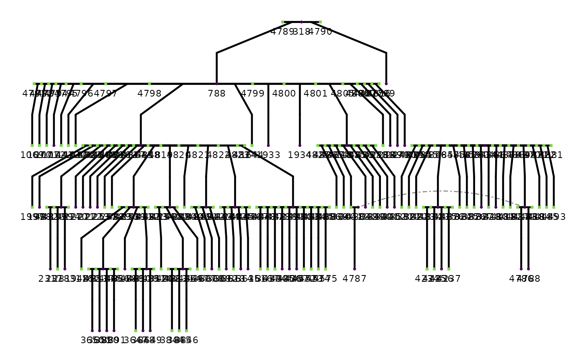

Pedigree and fitness data for North American red squirrels (Tamiasciurus hudsonicus) from the Kluane Red Squirrel Project, a long-term field study conducted in the boreal forests of Yukon, Canada, running continuously since 1987. The project has individually marked and monitored thousands of squirrels across multiple generations, producing one of the most detailed wild-animal pedigrees available for quantitative genetic research.
red_squirrelsA data frame with 7,799 rows and 16 columns:
Integer. Unique individual identifier.
Integer. Mother's personID. NA for
founders or individuals whose mother was not identified.
Integer. Father's personID. NA for
founders or individuals whose father was not identified.
Character. Sex: "F" (female), "M" (male).
Integer. Family group identifier assigned by
ped2fam.
Integer. Birth year. NA if unknown.
Integer. Death year. NA if the individual's fate
was not recorded or it was still alive at the end of the study.
Numeric. Lifetime reproductive success: total number of
offspring surviving to independence across the individual's entire
life. NA if not available.
Numeric. Mean annual reproductive success across all
years in which the individual was observed. NA if no annual
records are available.
Numeric. Maximum ARS value recorded across all observed years.
Numeric. Median ARS value across all observed years.
Numeric. Minimum ARS value across all observed years.
Numeric. Standard deviation of ARS values across all observed years.
Integer. Number of years for which an ARS value was recorded. Zero if the individual has no ARS records.
Integer. First calendar year in which the individual was observed.
Integer. Last calendar year in which the individual was observed.
McFarlane, S.E., Boutin, S., Humphries, M.M., et al. (2015). Very low levels of direct additive genetic variance in fitness and fitness components in a red squirrel population. Dryad. doi:10.5061/dryad.n5q05
Red squirrels in this population occupy individual year-round territories centered on a food cache (midden). Key fitness traits include annual reproductive success (ARS: the number of offspring surviving to independence in a given year) and lifetime reproductive success (LRS: the total number of such offspring over an individual's lifetime). These traits have been used to study the heritability of fitness in a natural population, with the original publication finding very low levels of direct additive genetic variance.
Family group IDs were assigned using ped2fam from
the BGmisc package. The original data are published under a
CC0 1.0 Universal Public Domain Dedication.
head(red_squirrels)
#> # A tibble: 6 × 16
#> personID momID dadID sex famID byear dyear lrs ars_mean ars_max ars_med
#> <dbl> <int> <int> <chr> <dbl> <int> <dbl> <int> <dbl> <dbl> <dbl>
#> 1 1 NA NA F 1 NA NA NA NA NA NA
#> 2 2 NA NA F 2 NA NA NA NA NA NA
#> 3 3 NA NA F 3 NA NA NA NA NA NA
#> 4 4 NA NA F 4 NA NA NA NA NA NA
#> 5 5 NA NA F 5 NA NA NA NA NA NA
#> 6 6 NA NA F 6 NA NA NA NA NA NA
#> # ℹ 5 more variables: ars_min <dbl>, ars_sd <dbl>, ars_n <dbl>,
#> # year_first <dbl>, year_last <dbl>
str(red_squirrels)
#> tibble [7,799 × 16] (S3: tbl_df/tbl/data.frame)
#> $ personID : num [1:7799] 1 2 3 4 5 6 7 8 9 10 ...
#> $ momID : int [1:7799] NA NA NA NA NA NA NA NA NA NA ...
#> $ dadID : int [1:7799] NA NA NA NA NA NA NA NA NA NA ...
#> $ sex : chr [1:7799] "F" "F" "F" "F" ...
#> $ famID : num [1:7799] 1 2 3 4 5 6 7 8 9 10 ...
#> $ byear : int [1:7799] NA NA NA NA NA NA NA NA NA NA ...
#> $ dyear : num [1:7799] NA NA NA NA NA NA NA NA NA NA ...
#> $ lrs : int [1:7799] NA NA NA NA NA NA NA NA NA NA ...
#> $ ars_mean : num [1:7799] NA NA NA NA NA NA NA NA NA NA ...
#> $ ars_max : num [1:7799] NA NA NA NA NA NA NA NA NA NA ...
#> $ ars_med : num [1:7799] NA NA NA NA NA NA NA NA NA NA ...
#> $ ars_min : num [1:7799] NA NA NA NA NA NA NA NA NA NA ...
#> $ ars_sd : num [1:7799] NA NA NA NA NA NA NA NA NA NA ...
#> $ ars_n : num [1:7799] 0 0 0 0 0 0 0 0 0 0 ...
#> $ year_first: num [1:7799] NA NA NA NA NA NA NA NA NA NA ...
#> $ year_last : num [1:7799] NA NA NA NA NA NA NA NA NA NA ...
# LRS distribution by sex
tapply(red_squirrels$lrs, red_squirrels$sex, summary)
#> [[1]]
#> Min. 1st Qu. Median Mean 3rd Qu. Max. NAs
#> NA NA NA NaN NA NA 1
#>
#> $`0`
#> Min. 1st Qu. Median Mean 3rd Qu. Max. NAs
#> NA NA NA NaN NA NA 1
#>
#> $F
#> Min. 1st Qu. Median Mean 3rd Qu. Max. NAs
#> 0.000 0.000 0.000 1.406 0.000 31.000 1552
#>
#> $M
#> Min. 1st Qu. Median Mean 3rd Qu. Max. NAs
#> 0.0000 0.0000 0.0000 0.3361 0.0000 17.0000 3262
#>
# Single-family pedigree plot
if (requireNamespace("ggpedigree", quietly = TRUE)) {
fam160 <- subset(red_squirrels, famID == 160)
ggpedigree::ggPedigree(fam160,
personID = "personID", momID = "momID", dadID = "dadID",
config = list(add_phantoms = TRUE, code_male = "M")
)
}
#> REPAIR IN EARLY ALPHA
